Communication Patterns
The intention of this chapter is not to show code examples and explain APIs for which there are many tutorials, but to have excellent visuals that explain how the various types of communication patterns work.
Point-to-point communications
Point-to-point communications are the simplest type of communication where there is always a single sender and a single receiver.
For example, Pipeline Parallelism performs a point-to-point communication where the activations from the current vertical stage is sent to the next stage. So the current gpu performs send and the gpu holding the next stage performs recv.
PyTorch has send and recv for blocking, isend and irecv for non-blocking p2p comms. more.
One-sided communications
Collectives and send/recv are two-sided: every rank that participates posts a matching call. One-sided (RMA) communication lets one rank write into or read from another rank's memory without that peer posting recv. That is the useful shape for irregular access - an embedding lookup, a weight copy, routing a token to one expert - where making every rank join an all-to-all would move more data than the algorithm needs.
Starting from PyTorch 2.14, nccl2 exposes this as a window over the NCCL Put/Get APIs. Creating the window is still collective - every rank in the group must call it in the same order - and as of 2.14 the Python entry points are experimental (dist._new_window, dist._supports_window). Use it when the access pattern is sparse; keep two-sided collectives when every rank participates.
Reference: PyTorch 2.14 release blog.
Collective communications
Collective communications include either multiple senders and a single receiver, a single sender and multiple receivers or multiple senders and multiple receivers.
In the world of PyTorch typically each process is tied to a single accelerator, and thus accelerators perform collective communications via process groups. The same process may belong to multiple process groups.
Broadcast
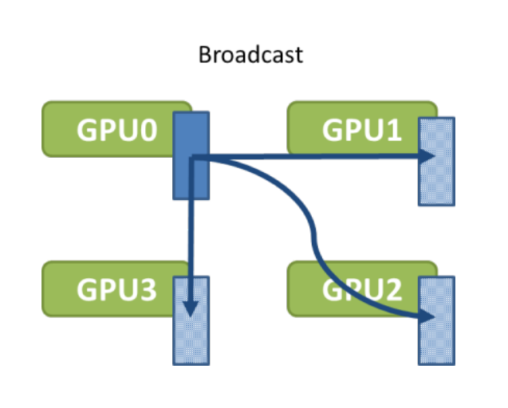
source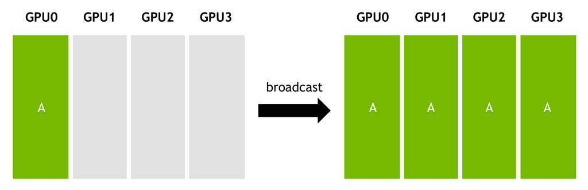
sourcePyTorch API example:
dist.broadcast(tensor, src, group): Copies tensor from src to all other processes. doc.
Gather
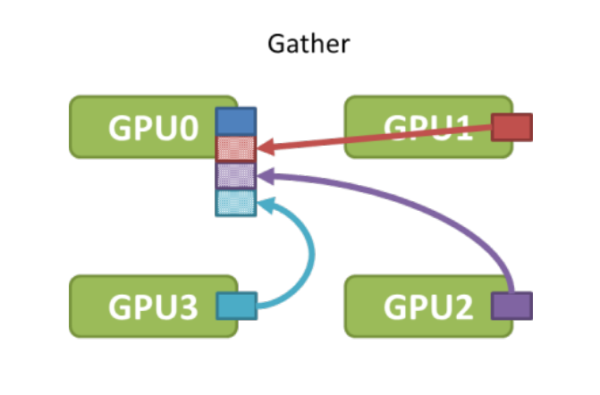
source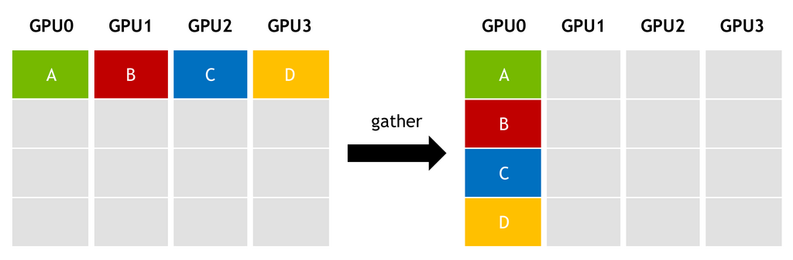
sourcePyTorch API example:
dist.gather(tensor, gather_list, dst, group): Copies one tensor from every process in the group into gather_list on dst. doc
All-gather
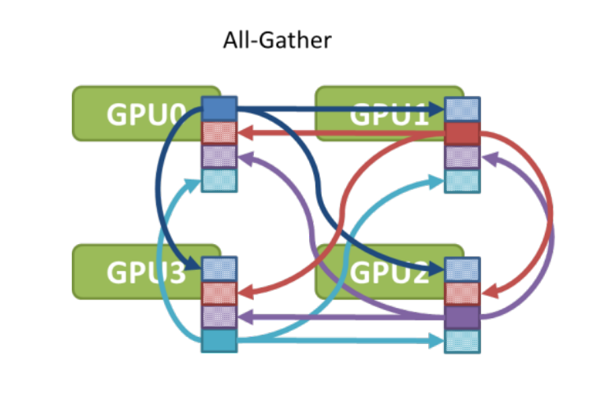
source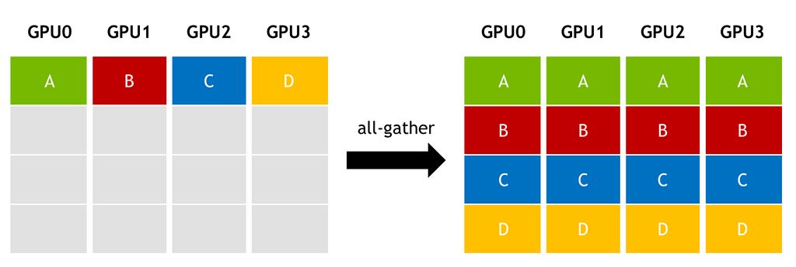
sourceFor example, this collective is used in ZeRO (DeepSpeed and FSDP) to gather the sharded model weights before forward and backward calls.
PyTorch API example:
dist.all_gather(tensor_list, tensor, group): Copies tensor from all processes to tensor_list, on all processes. doc
Reduce
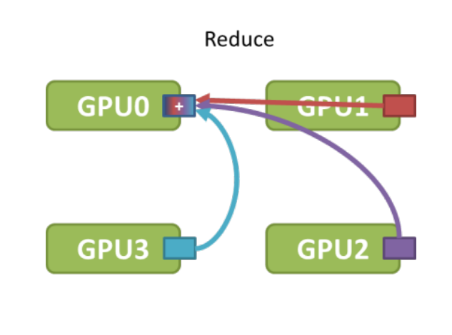
source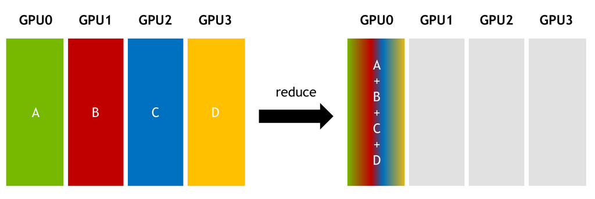
sourcePyTorch API example:
dist.reduce(tensor, dst, op, group): Applies op to every tensor and stores the result in dst. doc
PyTorch supports multiple reduction operations like: avg, sum, product, min, max, band, bor, bxor, and others - full list.
All-reduce
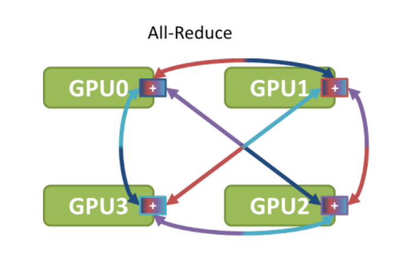
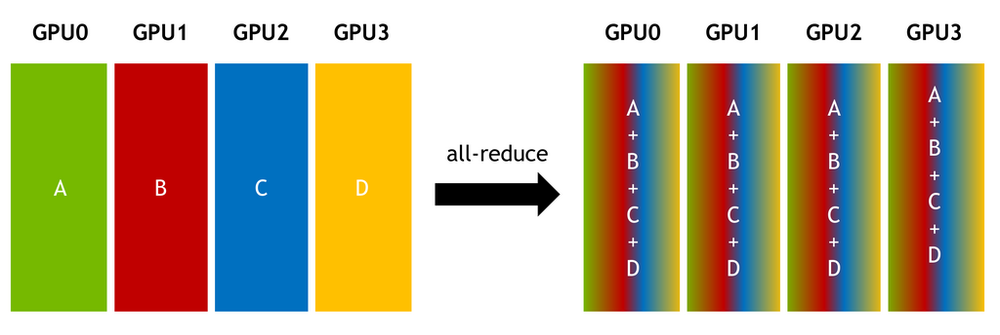
sourceFor example, this collective is used in DDP to reduce gradients between all participating ranks.
PyTorch API example:
dist.all_reduce(tensor, op, group): Same as reduce, but the result is stored in all processes. doc
Scatter
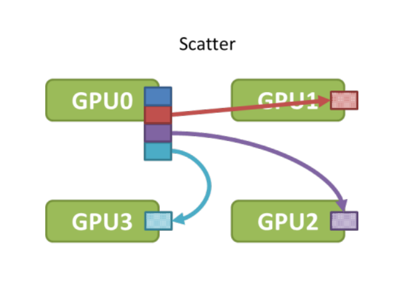
source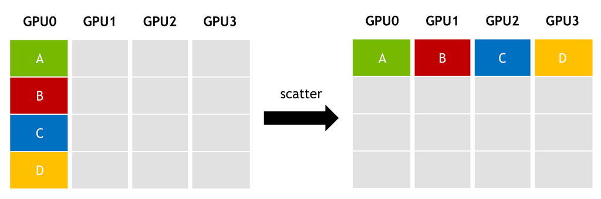
sourcePyTorch API example:
dist.scatter(tensor, scatter_list, src, group): Copies the i-th tensor scatter_list[i] to the i-th process. doc
Reduce-Scatter
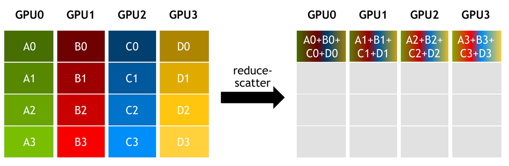
sourceFor example, this collective is used in ZeRO (DeepSpeed and FSDP) to efficiently reduce gradients across all participating ranks. Note that it isn't a cheaper drop-in for all-reduce - each rank ends up with only its own reduced shard rather than the full result. That is exactly what ZeRO wants, and it's why it costs half the data movement: a ring all-reduce is a reduce-scatter followed by an all-gather, so dropping the all-gather phase halves the bytes on the wire.
PyTorch API example:
dist.reduce_scatter(output, input_list, op, group, async_op): Reduces, then scatters a list of tensors to all processes in a group. doc
All-to-all
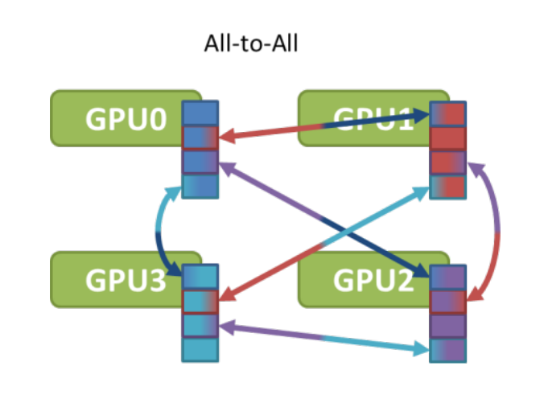
source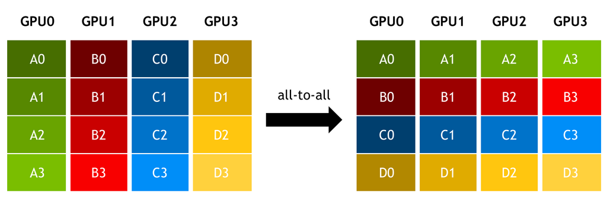
sourceFor example, this collective is used in DeepSpeed Sequence Parallelism for attention computation, and in MoE Expert Parallelism.
PyTorch API example:
dist.all_to_all(output_tensor_list, input_tensor_list, group): Scatters list of input tensors to all processes in a group and return gathered list of tensors in output list. doc
Algorithms
The collective communications may have a variety of different implementations, and comm libraries like nccl may switch between different algorithms depending on internal heuristics, unless overridden by users.
Ring
Broadcast with unidirectional ring
Given:
- N: bytes to broadcast
- B: bandwidth of each link
- k: number of GPUs
A naive broadcast will send N/B at each step. The total time to broadcast to k GPUs will take: (k-1)*N/B
Here is an example of how a ring-based broadcast is performed:
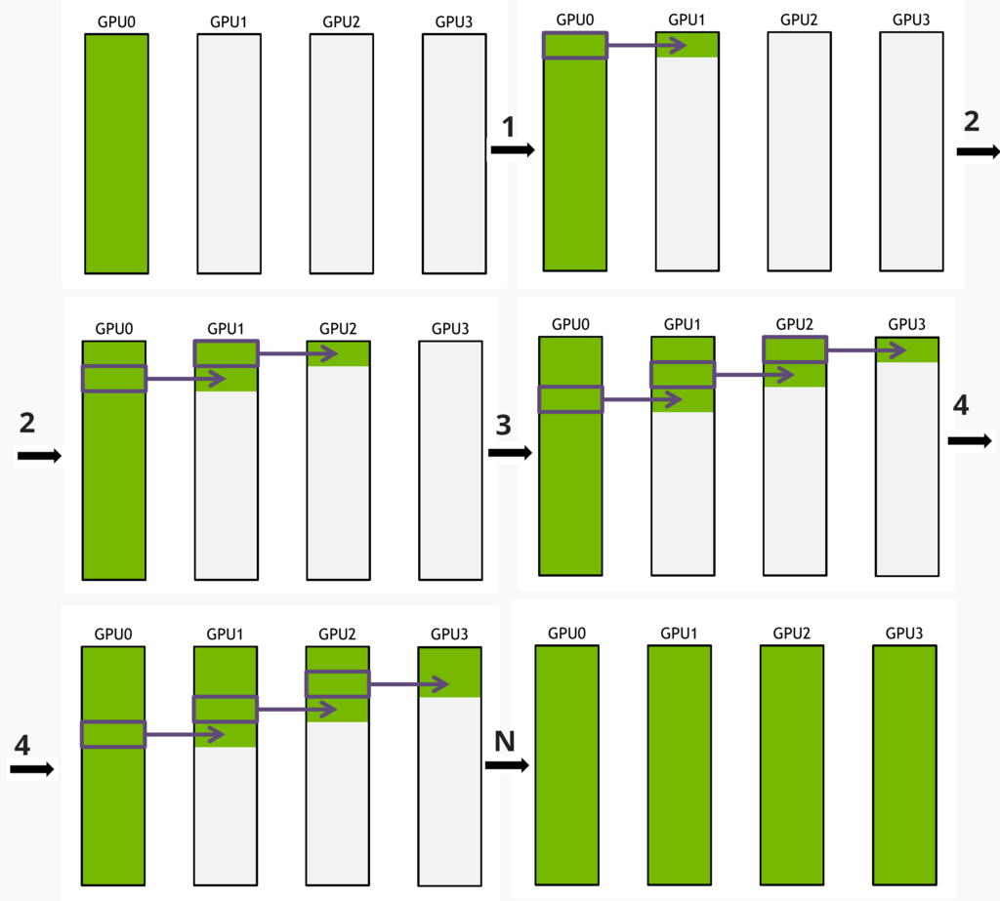
sourceThis algorithm splits N into S messages
At each step N/(S*B) is sent, which is S times less than the naive algorithm sends per step.
The total time to broadcast N bytes to k GPUs will take:
S*N/(S*B) + (k − 2)*N/(S*B) = N*(S + k − 2)/(S*B)
and if split messages are very small so that S>>k: S + k − 2 is ~S and then the total time is about N/B.
All-reduce with unidirectional ring
Ring-based all-reduce is done similarly to broadcast. The message is split into many small messages and each GPU sends a small message to the next GPU in parallel with other GPUs. all-reduce has to perform 2x steps than broadcast, because it performs a reduction - so the size of the message needs to be sent twice over the wire.
Moreover, the whole message can be first split into chunks, to make the process even more efficient. Here is the reduction of the first chunk:
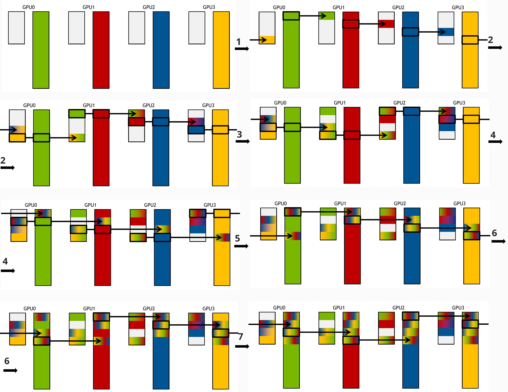
sourceThen the next chunk is done, until all smaller messages are reduced:
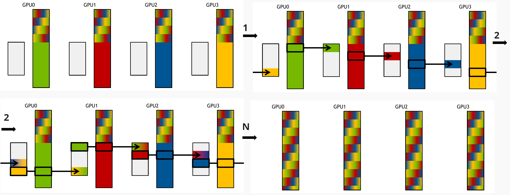
sourceTree
A ring passes the message from neighbor to neighbor, so the number of steps grows with the number of GPUs k, and the base latency grows with it. A tree fans the message out instead, so the hop count grows with log(k). That is why the two swap places as you scale: ring keeps the higher peak bandwidth, tree the lower base latency, and for a fixed message size a large enough k makes tree the faster of the two.
A single binary tree would waste half the machines: half the nodes are leaves, and a leaf only ever receives, so its outbound bandwidth never contributes. NCCL therefore builds a double binary tree - two trees over the same GPUs, arranged so no node is an interior node in both and at most one is a leaf in both. Both carry traffic simultaneously, which recovers the full bandwidth. The second tree is the first mirrored when the node count is even, or shifted by one position when it is odd.
For how NCCL picks between ring and tree, and how to see or override the choice, see NCCL_ALGO.
Protocols
The algorithm decides who sends what to whom. Orthogonal to it, the protocol decides how each of those transfers is synchronized, and it swings performance as much as the algorithm does. NCCL has three of them - this is the proto half of the Algo NVLS proto SIMPLE lines that NCCL_ALGO shows you.
Columns are ordered by ascending per-hop latency, which happens to be ascending bandwidth utilization too:
| Property | LL | LL128 | Simple |
|---|---|---|---|
| Design goal | low latency | low latency and high bandwidth | high bandwidth |
| Synchronization | flag-based | flag-based | memory fences |
| Payload per unit | 4B data + 4B flag | 120B data + 8B flag | large data chunks |
| Bandwidth utilization | 25-50% of peak | ~95% of peak | near peak |
| Latency per hop | ~1µs | ~2µs | ~6µs |
Sources:
- Demystifying NCCL: An In-depth Analysis of GPU Communication Protocols and Algorithms (2025), Table I.
Simple sends large chunks and uses memory fences to guarantee the receiver sees a complete chunk. That reaches near-peak bandwidth, but the fence cost dominates anything small. LL drops the fences: it pairs 4 bytes of data with a 4-byte flag and writes the 8 bytes atomically, so the receiver proceeds the moment the flag lands. The catch is that the staging buffer has to sit in host memory for the CPU to poll that flag, which rules out GPUDirect RDMA and caps LL at 25-50% of peak - acceptable when latency is all that matters, wasteful otherwise.
LL128 keeps the flag trick at 128-byte granularity, 120 bytes of data to an 8-byte flag, which is where the ~95% of peak comes from. It pays with a hardware requirement: those 128-byte writes must never be split or reordered by the interconnect, and where that isn't guaranteed - some PCIe paths - NCCL disables LL128 rather than risk corruption. So it is what you see on NVLink systems, and its strength is intra-node. Over a network the per-128-byte synchronization turns into millions of small operations on a large transfer, and Simple takes the lead again.
More guides
Here are some additional guides with good visuals:
NCCL-specific:
- Demystifying NCCL: An In-depth Analysis of GPU Communication Protocols and Algorithms (2025) - this paper presents a comprehensive analysis of NCCL, focusing on its communication protocol variants (Simple, LL, and LL128), mechanisms governing intra-node and inter-node data movement, and ring- and tree-based collective communication algorithms.